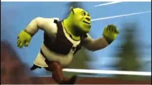
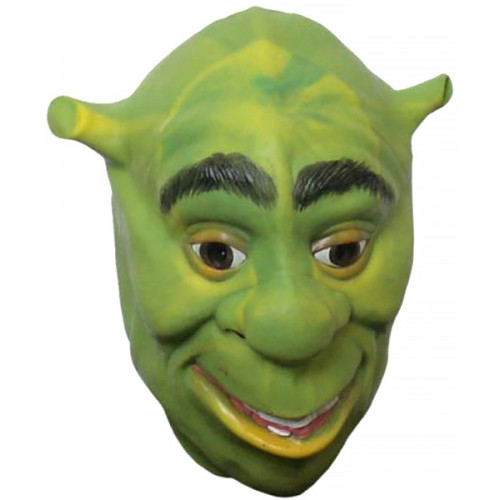
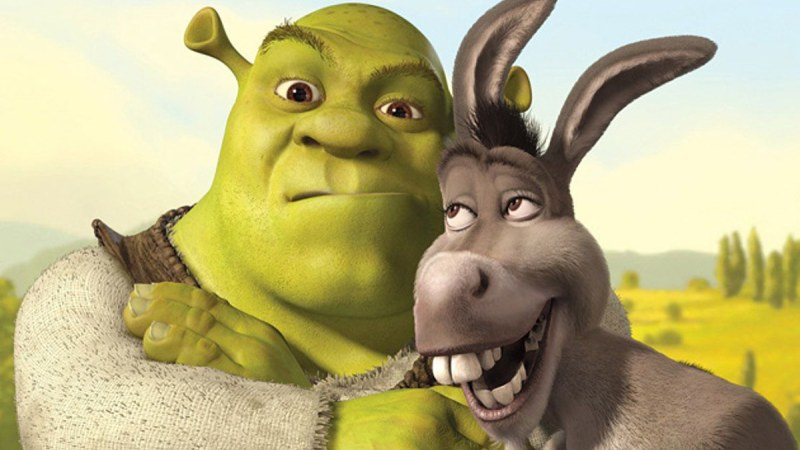

Шрек — це вигаданий персонаж із серії мультфільмів студії DreamWorks Animation. Він з’явився вперше у мультфільмі "Шрек" (2001), який знято за мотивами книги Вільяма Стайга. Шрек — зелений огр, що живе у болоті й любить спокій та самотність.
На початку історії Шрек здається грубим, сердитим і навіть страшним для людей. Але згодом виявляється, що він має добре серце, почуття гумору та вміє піклуватися про близьких. Його головна риса — щирість і небажання прикидатися кимось іншим.

У першому мультфільмі Шрек вирушає у пригоду, щоб врятувати принцесу Фіону. Він робить це не з романтичних мотивів, а щоб повернути собі своє болото. Проте поступово він закохується у Фіону, і вони стають справжньою сім’єю.

Найвідоміший друг Шрека — це Балакучий Осел, який завжди поруч і часто створює кумедні ситуації. Пізніше до компанії приєднується Кіт у чоботях. Серед ворогів Шрека можна згадати лорда Фаркуада, Принца Чарівного та інші казкові персонажі, які намагаються зіпсувати його життя.

Шрек став культовим героєм, а мультфільми про нього здобули "Оскар" і визнання в усьому світі. Персонаж настільки полюбився глядачам, що став символом прийняття себе і своїх недоліків, а також справжнім мемом в інтернет-культурі.